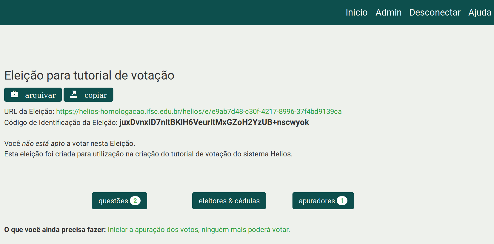
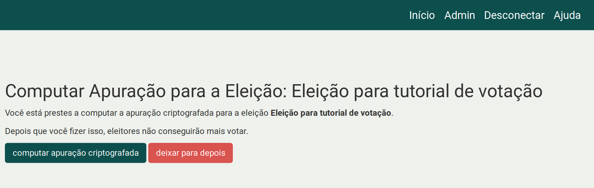
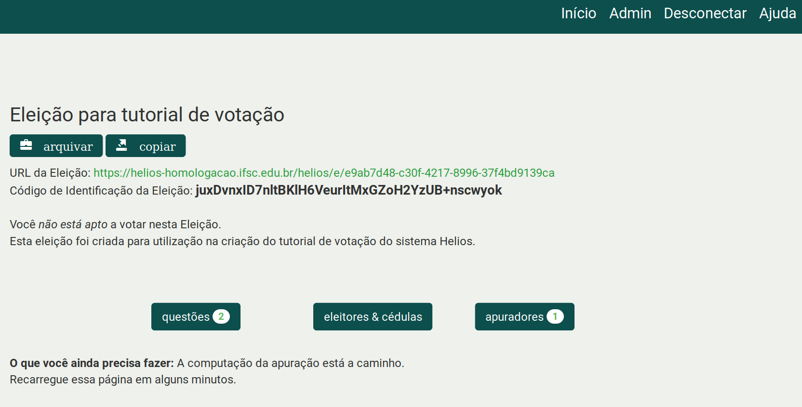
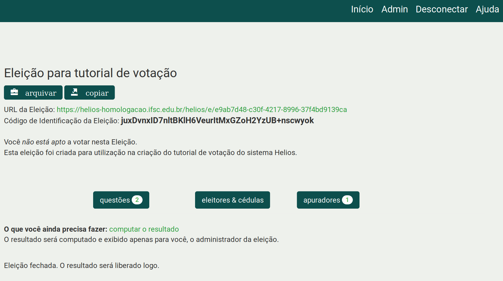
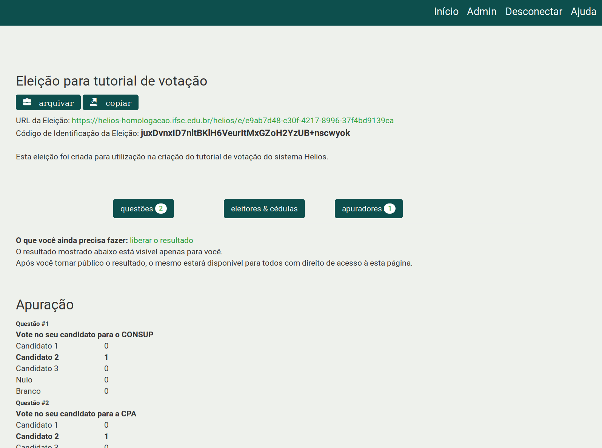
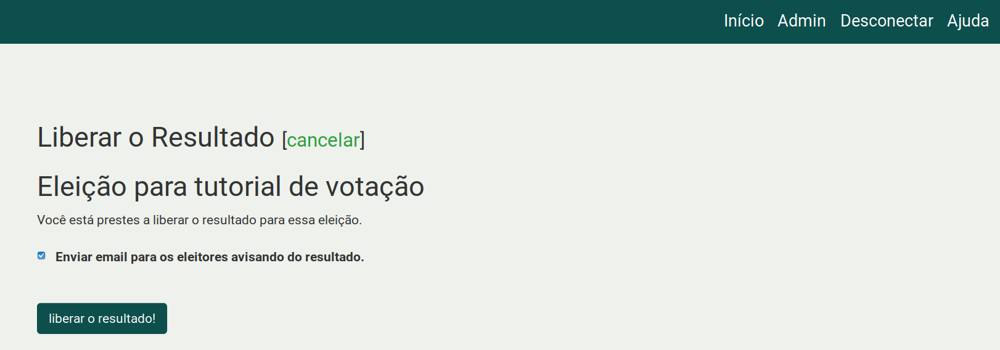
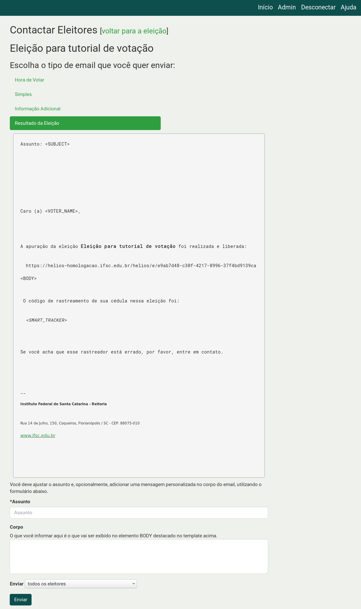
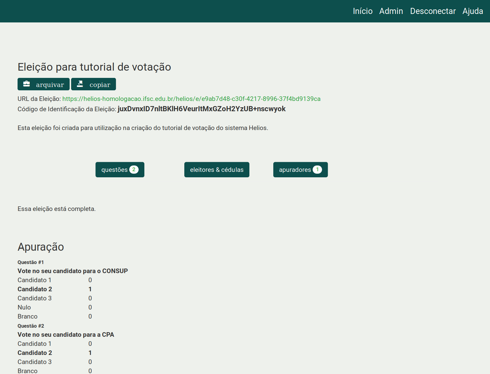

Como finalizar uma eleição
Atenção: Após fechar uma eleição, nenhum eleitor poderá mais colocar votos na urna. Esse processo não pode ser desfeito.
Finalizando uma eleição
Abaixo são apresentados os passos para fechar, apurar e tornar público o resultado de uma eleição tendo o sistema Helios como o único apurador. Se sua eleição possui apuradores humanos, então veja o manual Fechando uma eleição com apuradores humanos.
-
Entre na página inicial da eleição e clique no link Iniciar a apuração dos votos, ninguém mais poderá votar.

-
Clique no botão computar apuração criptografada.

-
Você será redirecionado para a página inicial da eleição (veja figura abaixo) informando que a apuração está a caminho.
-
Para acompanhar o progresso desse processo é necessário ficar atualizando a página manualmente (clicar no ícone “Recarregar página” no seu navegador).

-
Quando a apuração terminar, na página inicial da eleição clique no link computar o resultado.

-
Clique no botão computar a apuração e você será redirecionado para a página inicial da eleição e no final dessa página estará o resultado, que no momento, somente você conseguirá ver.

-
Clique no link liberar o resultado, para que esse resultado fique público na página da eleição.

-
Ao liberar o resultado existe a opção de enviar por e-mail um aviso aos eleitores que a apuração foi encerrada e que os resultados estão públicos. Se desejar enviar e-mail, deixe marcada a caixa de seleção e clique no botão liberar o resultado.

- Clique no botão Resultado da eleição. e obrigatoriamente você deverá informar um assunto do e-mail a ser enviado. Opcionalmente você pode escrever um texto que aparecerá no corpo do e-mail.
- Selecione para qual público o e-mail deverá ser enviado
- todos eleitores; ou
- somente os que depositaram cédula; ou
- somente os que ainda não depositaram
- E clique no botão Enviar

-
Pronto! A eleição foi finalizada, as cédulas foram computadas e o resultado foi publicado.

Fechando uma eleição com apuradores humanos
-
Entre na página inicial da eleição e clique no link Iniciar a apuração dos votos, ninguém mais poderá votar.
-
Clique no botão computar apuração criptografada.
-
Você será redirecionado para a página inicial da eleição (veja figura abaixo) informando que a apuração está a caminho.
-
Para acompanhar o progresso desse processo é necessário ficar atualizando a página manualmente (clicar no ícone “Recarregar página” no seu navegador).
-
Avise seus apuradores, i.e. enviando um e-mail para eles, que estes precisam carregar suas chaves criptográficas para iniciar a apuração da eleição.
- Os apuradores deverão seguir as instruções presentes no manual Como usar sua chave para apurar uma eleição
- É possível verificar quais apuradores já carregaram suas chaves e quais ainda não carregaram. Para isso, vá na página inicial da eleição e clique no botão Apuradores.
- Aqueles que não carregaram estarão com um ícone de um círculo preto com a letra i no seu interior.
- Aqueles que carregaram sua chave estarão com um ícone de um círculo preto com a letra v no seu interior.
-
Uma vez que todos os apuradores inseriram suas chaves, basta seguir os passos de 4 a 9 presentes no início desse manual.